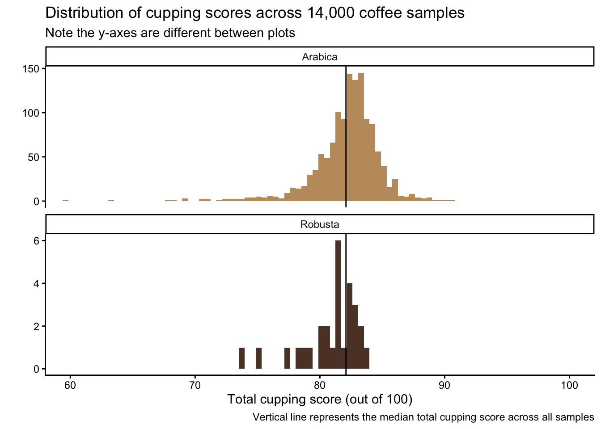
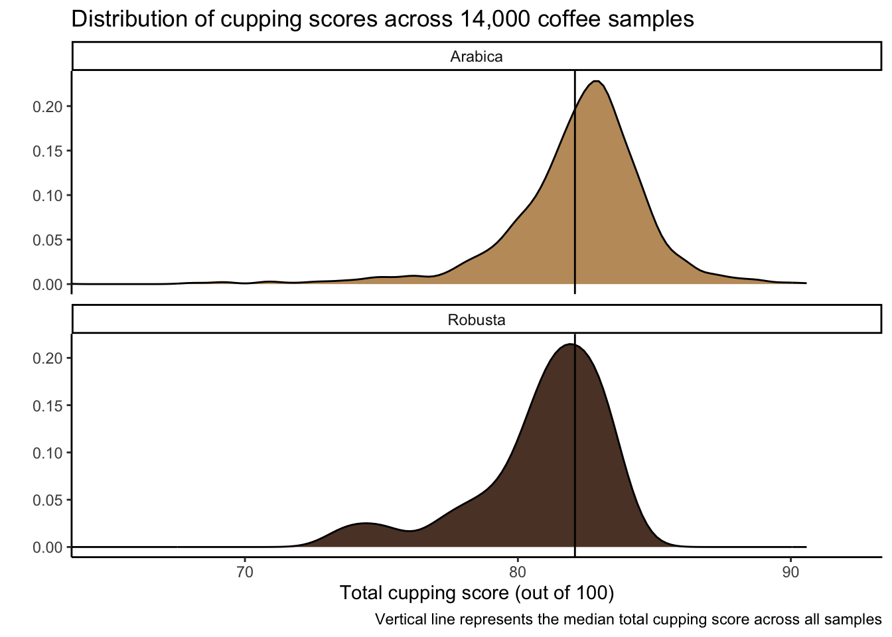
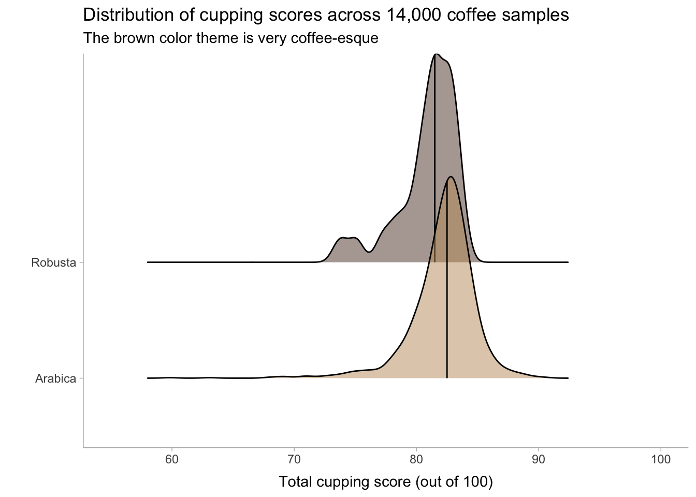
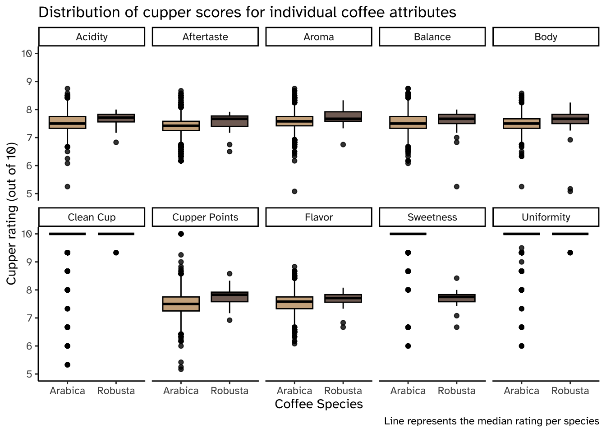
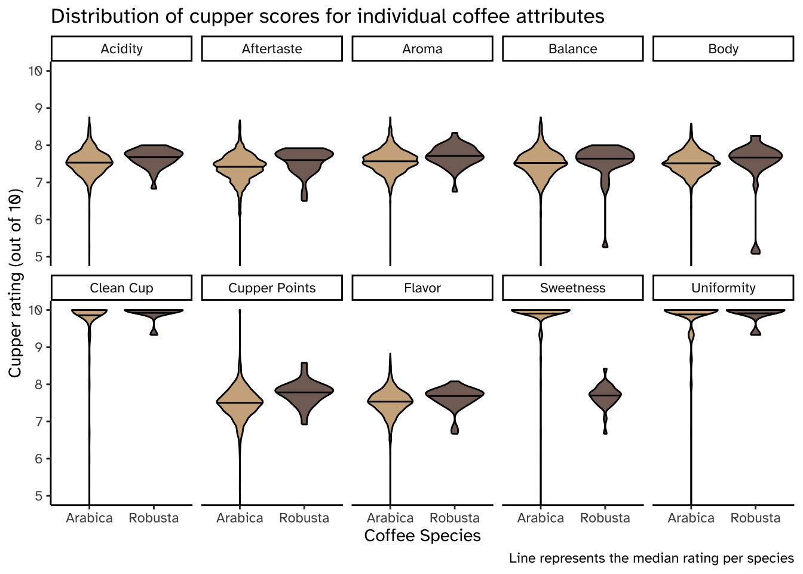

Understanding Data Distributions Recitation Solutions ☕
Week 7
Author
Jessica Cooperstone
Introduction
Today you will be investigating some data from the Coffee Quality Database on coffee evaluation by the Coffee Quality Institute. You will look at the distribution of coffee evaluation scores across different characteristics, and include various metadata.
More information can be found on the Tidy Tuesday github repo on coffee ratings.
Read in data
tuesdata <- tidytuesdayR::tt_load('2020-07-07')
---- Compiling #TidyTuesday Information for 2020-07-07 ----
--- There is 1 file available ---
── Downloading files ───────────────────────────────────────────────────────────
1 of 1: "coffee_ratings.csv"
coffee_ratings <- tuesdata$coffee_ratings
Load libraries
library(tidyverse) # for everythinglibrary(ggridges) # for ridgeline plotslibrary(ggdist) # for nice dotplots
Total cupping score in Arabica and Robusta
Make 3 different visualizations that shows the distribution of total cupping score (i.e. total_cup_points) across Arabica and Robusta beans. Make the plots so you think they look good.
A histogram
Since there are so few robusta observations, I decided to make the y-axes on different scales
coffee_ratings %>%ggplot(aes(x = total_cup_points, fill = species)) +geom_histogram(bins =200) +geom_vline(aes(xintercept =mean(total_cup_points)), color ="black") +scale_fill_manual(values =c("#C19A6B", "#5C4033")) +coord_cartesian(xlim =c(60,100)) +# change x-axis limitsfacet_wrap(vars(species),nrow =2, # make two rows so can align histograms top to bottomscales ="free_y",strip.position ="top") +theme_classic() +theme(legend.position ="none") +labs(x ="Total cupping score (out of 100)",y ="",fill ="Species",title ="Distribution of cupping scores across 14,000 coffee samples",subtitle ="Note the y-axes are different between plots",caption ="Vertical line represents the median total cupping score across all samples")

Density plot
I might like this a bit better than a histogram.
coffee_ratings %>%ggplot(aes(x = total_cup_points, fill = species)) +geom_density() +geom_vline(aes(xintercept =mean(total_cup_points)), color ="black") +coord_cartesian(xlim =c(65,92)) +scale_fill_manual(values =c("#C19A6B", "#5C4033")) +facet_wrap(vars(species),nrow =2, # make two rows so can align histograms top to bottomscales ="free_y") +theme_classic() +theme(legend.position ="none") +labs(x ="Total cupping score (out of 100)",y ="",fill ="Species",title ="Distribution of cupping scores across 14,000 coffee samples",caption ="Vertical line represents the median total cupping score across all samples")

Dot plot
You can also see here how many fewer robusta observations there are.
Warning: Using the `size` aesthetic with geom_segment was deprecated in ggplot2 3.4.0.
ℹ Please use the `linewidth` aesthetic instead.

Individual characteristic cupping scores in Arabica and Robusta
Make 3 different visualizations that show the distribution of all the individual contributors (i.e., aroma, flavor, aftertaste, acidity, body, balance, uniformity, clean_cup, sweetness, cupper_points) to total cupping score across Arabica and Robusta in one plot.
Wrangling:
# go from wide (each coffee attribute in a separate column)# to long data (1 column w/ all characteristics, 1 column w/ all ratings)coffee_ratings_tidy <- coffee_ratings %>%pivot_longer(cols = aroma:cupper_points, # columns from aroma to cupper_pointsnames_to ="characteristic",values_to ="rating")
Prepare to clean up facet strip text using the function labeller().
# getting labels ready for plotting# what are the coffee characteristics again?(coffee_characteristics <-unique(coffee_ratings_tidy$characteristic) %>%sort()) # sort alphabetically, arrange won't work here bc not numeric
# create a vector of the coffee characteristic names as i want them to appear on the plotcoffee_labels <-c("Acidity","Aftertaste","Aroma","Balance","Body","Clean Cup","Cupper Points","Flavor","Sweetness","Uniformity")# tell coffee_labels which original label to refer to# these need to be in the same order (which is why i used sort())names(coffee_labels) <- coffee_characteristics
Managing fonts:
# get fonts not default available in Rlibrary(sysfonts) # aux packagew here fonts livelibrary(showtext) # package that helps use non-standard fonts
Loading required package: showtextdb
library(ragg)# add the font Atkison Hyperlegible bc i like itfont_add_google("Atkinson Hyperlegible")# what fonts do i have to choose from?# remove head() to see them allhead(font_info_google())
family category num_variants variants num_subsets
1 ABeeZee sans-serif 2 regular, italic 1
2 Abel sans-serif 1 regular 1
3 Abhaya Libre serif 5 regular, 500, 600, 700, 800 3
4 Abril Fatface display 1 regular 2
5 Aclonica sans-serif 1 regular 1
6 Acme sans-serif 1 regular 1
subsets version lastModified
1 latin v20 2022-01-27
2 latin v12 2020-09-10
3 latin, latin-ext, sinhala v11 2022-01-25
4 latin, latin-ext v18 2022-01-27
5 latin v16 2022-01-25
6 latin v17 2022-01-27
# use to indicate that showtext is needed showtext_auto()
Boxplots
This is just ok.
coffee_ratings_tidy %>%ggplot(aes(x = species, y = rating, fill = species)) +geom_boxplot(color ="black", alpha =0.8) +scale_fill_manual(values =c("#C19A6B", "#5C4033")) +coord_cartesian(ylim =c(5,10)) +facet_wrap(vars(characteristic),labeller =labeller(characteristic = coffee_labels), # all that work we did earliernrow =2) +# 2 rows in the faceted plottheme_classic() +theme(legend.position ="none",text =element_text(family ="Atkinson Hyperlegible")) +# changing fontlabs(x ="Coffee Species",y ="Cupper rating (out of 10)",title ="Distribution of cupper scores for individual coffee attributes",caption ="Line represents the median rating per species")

Violin plot
# violin plotcoffee_ratings_tidy %>%ggplot(aes(x = species, y = rating, fill = species)) +geom_violin(draw_quantiles =0.5, color ="black", alpha =0.8) +scale_fill_manual(values =c("#C19A6B", "#5C4033")) +coord_cartesian(ylim =c(5,10)) +facet_wrap(vars(characteristic),labeller =labeller(characteristic = coffee_labels), # all that work we did earliernrow =2) +# 2 rows in the faceted plottheme_classic() +theme(legend.position ="none",text =element_text(family ="Atkinson Hyperlegible")) +# changing fontlabs(x ="Coffee Species",y ="Cupper rating (out of 10)",title ="Distribution of cupper scores for individual coffee attributes",caption ="Line represents the median rating per species")

Dot plots
This is just ok.
coffee_ratings_tidy %>%ggplot(aes(x = species, y = rating, color = species)) +geom_dots(side ="both", layout ="swarm") +scale_color_manual(values =c("#C19A6B", "#5C4033")) +coord_cartesian(ylim =c(6,10)) +facet_wrap(vars(characteristic),labeller =labeller(characteristic = coffee_labels),nrow =2) +theme_classic() +theme(legend.position ="none",text =element_text(family ="Atkinson Hyperlegible")) +# changing fontlabs(x ="Cupper rating (out of 10)",y ="Coffee Species",title ="Distribution of cupper scores for individual coffee attributes")
Density plot
This one I think is my favorite.
coffee_ratings_tidy %>%ggplot(aes(x = rating, y = species, fill = species)) +geom_density_ridges(alpha =0.8,quantile_lines =TRUE,quantiles =2) +scale_fill_manual(values =c("#C19A6B", "#5C4033")) +coord_cartesian(xlim =c(6,10)) +facet_wrap(vars(characteristic),labeller =labeller(characteristic = coffee_labels),nrow =2) +theme_classic() +theme(legend.position ="none") +labs(x ="Cupper rating (out of 10)",y ="Coffee Species",title ="Distribution of cupper scores for individual coffee attributes")